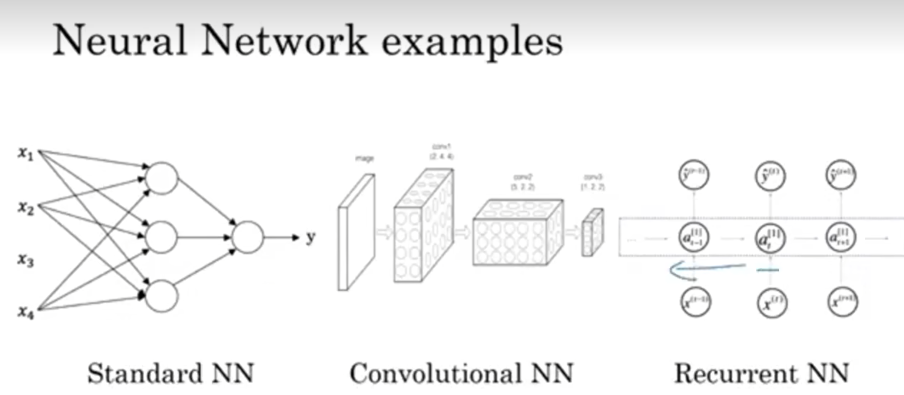

Deep Learning in English 2
Deep Learning 2
Supervised learning with Neural Networks
Recently, with a rapid dedvelopment of Artificial Intelligence, it has already created a large amount of economic benefit to society. Supervised learning, as a part of machine learning, has a large propotions of the benefit created by AI.
Supervised learning can be considered as a type of machine learning that requires exact features and specific targets which was set by human beings . It can be considered as a semi - automatic learning methods as we need to input specific data by humans
To be exact, we need to tell the machine what is input, and what is the output to get a model of predictions. Like nowadays, we need to make predictions of our real estate or differatiating the images like photo tagging. (I recently make classifications of kinds of flowers by making machines gather features of variaty kinds of flowers and make classifications according to the features it get), or make precises and pretty translations among languages. Perhaps the most lucrative applications of it is Online advertising. By collecting your personal informations and detecting whether you click the ads, the machines learn whether you get favor of this kind of ads . As returned, it will offer you the ads you likely like more.
These kinds of applications all use the relatively standard neural networks. There are several kind of NN( NN stands for Nerual networks). The traditional one is SNN(Standard NN). and also, we use CNN(Convolutional NN)(卷积) in image processing . RNN(Recurrent NN) is fit for one- dimensional sequence data that has maybe a temporal component.

Supervised learning can deal with Structured data and Unstructured data. Structured data is a kind of data that has been quantified in database, while unstructured data involves audio ,images , texts and so on. Computers is harder to deal with unstructured data, but with a development of AI , computers are getting a better understanding of unstructured data.
So, NN has a deep effect on machine learning, so how should we make NN work properly? Let’s go to the next page!